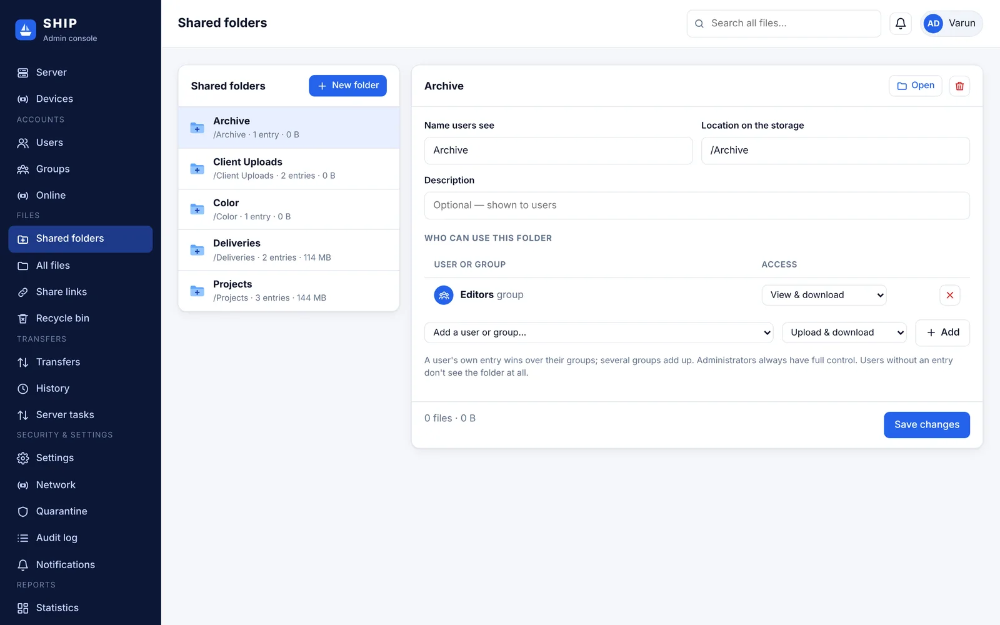
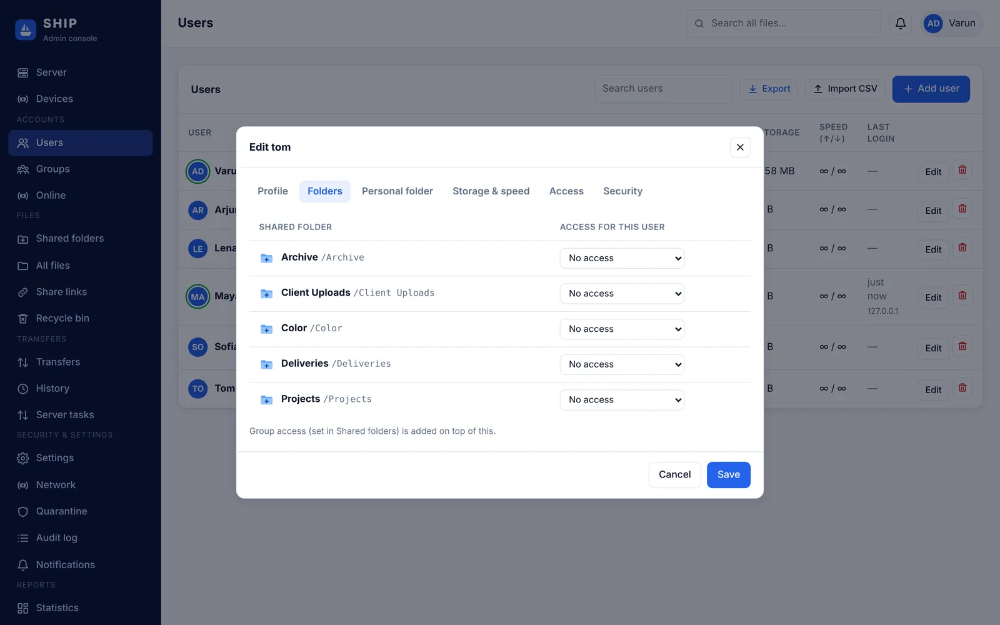

SHIP
SHIPUsers, groups and shared folders
Build the folder structure, add people and decide exactly what each person can do in each folder.
How access works
- Shared folders are folders on the storage that you share with chosen users and groups.
- For every user or group on a folder you pick an access level. People with no access don't see the folder at all.
- A user's own entry on a folder wins over their groups. If several of their groups have access, the permissions add up.
- Administrators always have full access to everything.
- Each user can also have a personal folder ("My Files"), or none, so they work only in shared folders.
Access levels
| Level | The person can | Good for |
|---|---|---|
| View & download | See and download files | Clients receiving deliverables, reviewers |
| Upload only (drop box) | See the folder and upload, but not download | Collecting files from clients or freelancers |
| Upload & download | Download, upload, create folders, rename | Team members working on a project |
| Full control | Everything, including delete and share links | Project leads |
| Custom | Any combination of browse, download, upload, delete, rename, create folders, share links, sync | Special cases |
Create a shared folder
- In the admin console open Files › Shared folders and click New folder.
- Enter the name users see (for example Projects). Optionally set a location on the storage; by default it's
/Projects. To share a folder that already has files, enter its existing path. - Optionally give a group or user access straight away.
- In the folder details, use Add a user or group to add more people, change their access levels, then Save changes. Users see the change immediately.

To build subfolders (for example Projects/Northern Lights/Day 1), click Open on the folder or use All files, then create folders there. Anyone with Create folders permission can also create their own subfolders.
Removing a shared folder only stops sharing it. The files stay on the storage.
Add users
- Open Accounts › Users and click Add user.
- Profile: user name, full name, email (optional, for notifications) and a password. Leave the password empty to generate one; the user changes it at first sign-in.
- Folders: choose an access level for each shared folder, or leave it at No access.
- Personal folder: untick Give this user a personal folder if they should only use shared folders.
- Click Create user and send them their user name, password and the server address.

You can also import many users at once from a CSV file (Import CSV) and export the user list.
Groups
Groups save time: give a group access to a folder once, and everyone in it gets access. Create groups in Accounts › Groups, then tick groups in each user's Profile tab. A group can also have its own group space with a quota.
More per-user controls
| Setting | Where |
|---|---|
| Storage quota and upload/download speed limits | User › Storage & speed |
| Hidden paths, allowed login addresses, account expiry date | User › Access |
| Disable or unlock the account, reset two-factor | User › Security |
| Allowed or blocked file types and maximum file size | User › Personal folder › Transfer rules |
Example: a small video studio
| Folder | Editors | Colorists | Clients |
|---|---|---|---|
| Projects | Upload & download | View & download | No access |
| Color | No access | Full control | No access |
| Deliveries | Upload & download | No access | View & download |
| Client Uploads | View & download | No access | Upload only |
Client accounts get no personal folder, so they only ever see Deliveries and Client Uploads.